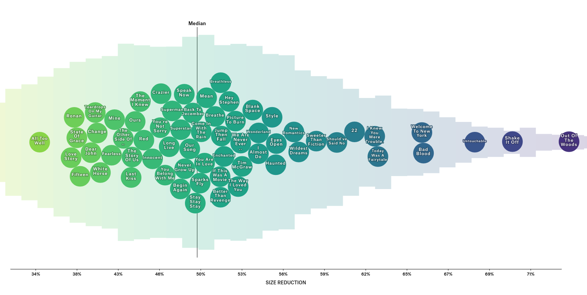
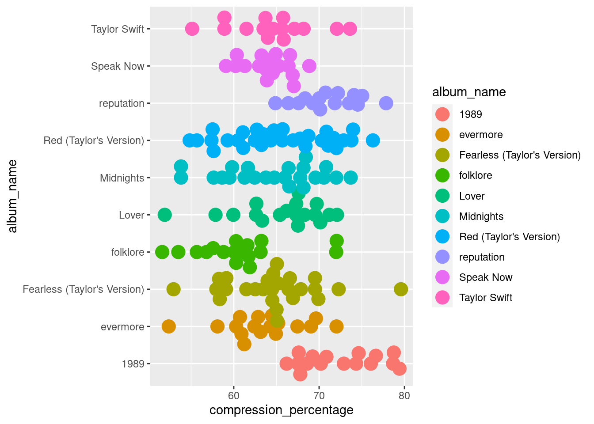

I think Art Pop Lyrics Getting More Repetitive was the first Pudding essay I ever came across and it has stuck with me ever since. Julia Silge’s blogs introduced me to natural-language processing around the same time and MAN, my mind was blown. Colin Morris’ Compression of Pop Lyrics remains one of my favorite works of all time (I’m a big fan of his blog as well). I love the idea of using something I’d never have thought of like zip compression to quantify repetition in text. This week’s tidytuesday dataset on Taylor Swift I wanted to recreate some of the work he did in the original essay.
He also included a slice of Taylor Swift data, which is nice! I could use this to cross-check my own work. Let’s get to it.

Pre-processing
I’m not going to use the tidytuesday datasets because they don’t have the lyrics column in the CSVs, so instead I’m using the what they use as source and processing the data from the {taylor} package.
The lyrics are stored as lists inside the lyrics column so first we need to unnest that.
# A tibble: 6 × 32
album_name ep album_release track_number track_name artist featuring
<chr> <lgl> <date> <int> <chr> <chr> <chr>
1 Taylor Swift FALSE 2006-10-24 1 Tim McGraw Taylor Swi… <NA>
2 Taylor Swift FALSE 2006-10-24 1 Tim McGraw Taylor Swi… <NA>
3 Taylor Swift FALSE 2006-10-24 1 Tim McGraw Taylor Swi… <NA>
4 Taylor Swift FALSE 2006-10-24 1 Tim McGraw Taylor Swi… <NA>
5 Taylor Swift FALSE 2006-10-24 1 Tim McGraw Taylor Swi… <NA>
6 Taylor Swift FALSE 2006-10-24 1 Tim McGraw Taylor Swi… <NA>
# ℹ 25 more variables: bonus_track <lgl>, promotional_release <date>,
# single_release <date>, track_release <date>, danceability <dbl>,
# energy <dbl>, key <int>, loudness <dbl>, mode <int>, speechiness <dbl>,
# acousticness <dbl>, instrumentalness <dbl>, liveness <dbl>, valence <dbl>,
# tempo <dbl>, time_signature <int>, duration_ms <int>, explicit <lgl>,
# key_name <chr>, mode_name <chr>, key_mode <chr>, line <int>, lyric <chr>,
# element <chr>, element_artist <chr>
Cool, we have lyrics line by line! I only need this for the python stuff so I’ll remove it right after.
Compressing the lyrics
This took some tinkering and I went through a couple of versions of how to compress lyrics so that I get the same results as Colin, but I didn’t want to work on this for too long, so I said screw it, let me just do the most basic compression without any other fine-tuning.
import pandas as pdimport zlibdef compress_string(input_str):return zlib.compress(input_str.encode('utf-8'))# Load the datadf = pd.read_csv('./album_lyrics.csv')# Group by track_name and concatenate lyricsgrouped_lyrics = df.groupby('track_name')['lyric'].apply(' '.join).reset_index()# Compress lyricsgrouped_lyrics['compressed_lyric'] = grouped_lyrics['lyric'].apply(compress_string)# Calculate sizesgrouped_lyrics['original_size'] = grouped_lyrics['lyric'].apply(len)grouped_lyrics['compressed_size'] = grouped_lyrics['compressed_lyric'].apply(len)# Calculate size reduction and compression percentagegrouped_lyrics['size_reduction'] = grouped_lyrics['original_size'] - grouped_lyrics['compressed_size']grouped_lyrics['compression_percentage'] = (grouped_lyrics['size_reduction'] / grouped_lyrics['original_size']) *100# Save to CSVgrouped_lyrics.to_csv('./compressed_lyrics.csv', index=False)
This naturally gives different results and is less accurate than the original analysis by Colin, but after checking the values which I expected to fall around the same place (for example, “Out of the Woods” being one of the most repetitive songs), I think this was good enough.
With that, we can now bring this into R again for some little dplyr love.
I thought of using the {ggbeeswarm} package, to create the full graphic so I tried that out
# Prototypedata %>%ggplot() +geom_beeswarm(aes(x = compression_percentage, y = album_name, color = album_name),size =5,cex =3 )

Nice, it has some interesting features. I didn’t want to ggplot today though, because I’m out of touch but also because I’ve been meaning to try the Layercake Svelte framework for a while, so I ended the the data wrangling here.